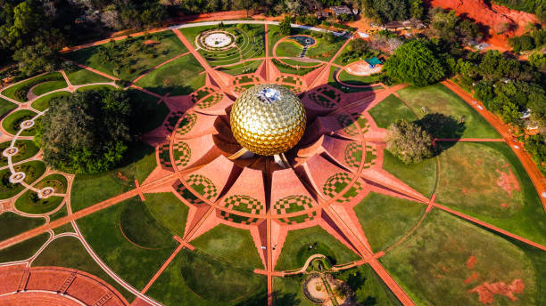

01
French Quarter (White Town)
Charming colonial grid streets lined with mustard-yellow heritage villas, tall bougainvillea trees, French street signs, and boutique cafés.

Discover the charming French Riviera of the East — mustard-yellow colonial villas, bougainvillea-draped alleys, rocky seaside promenades, Auroville experiments, and Creole fusion flavors.
Explore Puducherry ↓Puducherry (formerly Pondicherry) is a peaceful coastal Union Territory along the Bay of Bengal, distinguished by its unique blend of French colonial heritage and traditional Tamil culture.
From cycling through the mustard-hued mansions of the French Quarter (White Town) and meditating at the Matrimandir in Auroville to strolling down the traffic-free Rock Beach Promenade, Puducherry offers a tranquil escape.
Colonial quarters, spiritual townships, and scenic rock beaches across Puducherry.
Charming colonial grid streets lined with mustard-yellow heritage villas, tall bougainvillea trees, French street signs, and boutique cafés.

An experimental universal township dedicated to human unity, anchored by the iconic golden-domed Matrimandir meditation globe.

A 1.5 km long seaside stretch free of vehicular traffic, famous for sunrise walks, Dupleix statue, and refreshing sea breezes.

A pristine stretch of golden sand accessible via a scenic boat ride across Chunnambar River backwaters, ideal for relaxation.
Puducherry's unique Creole cuisine combines authentic Tamil spices with traditional French baking techniques and fresh Bay of Bengal seafood.

Architecture, administrative history, police uniforms, and a distinct Franco-Tamil lifestyle preserved over centuries.
A global spiritual epicenter established in 1926 by Sri Aurobindo and The Mother, promoting integral yoga and inner peace.
Vibrant Tamil quarters (Goubert Nagar), colorful temple festivals, Carnatic music, and traditional kolam art.
A relaxed seaside rhythm of life that embraces art galleries, cycling tours, yoga retreats, and café conversations.
Discover all states, union territories, local food specialties, and centuries of living traditions.
← Back to Union Territories